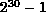

A set of attributes that describe the execution environment are attached to the communicator MPI_COMM_WORLD when MPI is initialized. The value of these attributes can be inquired by using the function MPI_ATTR_GET described in Chapter Groups, Contexts, and Communicators . It is erroneous to delete these attributes, free their keys, or change their values.
The list of predefined attribute keys include
These predefined attributes do not change value between MPI initialization ( MPI_INIT and MPI completion ( MPI_FINALIZE), and cannot be updated or deleted by users.
[] Advice to users.
Note that in the C binding, the value returned by these attributes is a
pointer to an int containing the requested value.
( End of advice to users.)
The required parameter values are discussed in more detail below:
Tag values range from 0 to the value returned for MPI_TAG_UB inclusive. These values are guaranteed to be unchanging during the execution of an MPI program. In addition, the tag upper bound value must be at least 32767. An MPI implementation is free to make the value of MPI_TAG_UB larger than this; for example, the value  is also a legal value for MPI_TAG_UB.
The attribute MPI_TAG_UB has the same value on all processes of MPI_COMM_WORLD.
The value returned for MPI_HOST gets the rank of the HOST process in the group associated with communicator MPI_COMM_WORLD, if there is such. MPI_PROC_NULL is returned if there is no host. MPI does not specify what it means for a process to be a HOST, nor does it requires that a HOST exists.
The attribute MPI_HOST has the same value on all processes of MPI_COMM_WORLD.
The value returned for MPI_IO is the rank of a processor that can provide language-standard I/O facilities. For Fortran, this means that all of the Fortran I/O operations are supported (e.g., OPEN, REWIND, WRITE). For C, this means that all of the ANSI-C I/O operations are supported (e.g., fopen, fprintf, lseek).
If every process can provide language-standard I/O, then the value MPI_ANY_SOURCE will be returned. Otherwise, if the calling process can provide language-standard I/O, then its rank will be returned. Otherwise, if some process can provide language-standard I/O then the rank of one such process will be returned. The same value need not be returned by all processes. If no process can provide language-standard I/O, then the value MPI_PROC_NULL will bereturned.
[] Advice to users.
Note that input is not collective, and this attribute does not indicate
which process can or does provide input.
( End of advice to users.)
The value returned for MPI_WTIME_IS_GLOBAL is 1 if clocks
at all processes in
MPI_COMM_WORLD are synchronized, 0
otherwise. A collection of clocks is considered synchronized if
explicit effort has been taken to synchronize them. The
expectation is that the variation in time, as measured by calls
to MPI_WTIME, will be less then one half the round-trip
time for an MPI message of length zero. If time is measured at a
process just before a send and at another process just after a matching
receive, the second time should be always higher than the first one.
The attribute MPI_WTIME_IS_GLOBAL need not be present when the clocks are not synchronized (however, the attribute key MPI_WTIME_IS_GLOBAL is always valid). This attribute may be associated with communicators other then MPI_COMM_WORLD.
The attribute MPI_WTIME_IS_GLOBAL has the same value on all processes of MPI_COMM_WORLD.
MPI_GET_PROCESSOR_NAME( name, resultlen )
[ OUT name] A unique specifier for the actual (as
opposed to virtual) node.
[ OUT resultlen] Length (in printable characters) of the
result returned in name
int MPI_Get_processor_name(char *name, int *resultlen)
MPI_GET_PROCESSOR_NAME( NAME, RESULTLEN, IERROR)
CHARACTER*(*) NAME
INTEGER RESULTLEN,IERROR
This routine returns the name of the processor on which it was called at the moment of the call. The name is a character string for maximum flexibility. From this value it must be possible to identify a specific piece of hardware; possible values include ``processor 9 in rack 4 of mpp.cs.org'' and ``231'' (where 231 is the actual processor number in the running homogeneous system). The argument name must represent storage that is at least MPI_MAX_PROCESSOR_NAME characters long. MPI_GET_PROCESSOR_NAME may write up to this many characters into name.
The number of characters actually written is returned in the output argument, resultlen.
[] Rationale.
This function allows MPI implementations that do process
migration to return the current processor. Note that nothing in MPI
requires or defines process migration; this definition of
MPI_GET_PROCESSOR_NAME simply allows such an implementation.
( End of rationale.)
[] Advice to users.
The user must provide at least MPI_MAX_PROCESSOR_NAME space
to write the processor name --- processor names can be this long. The user
should examine the ouput argument, resultlen, to determine
the actual length of the name.
( End of advice to users.)
The constant MPI_BSEND_OVERHEAD provides an upper bound on
the fixed overhead per message buffered by a call to
MPI_BSEND (see Section Model implementation of buffered mode
).